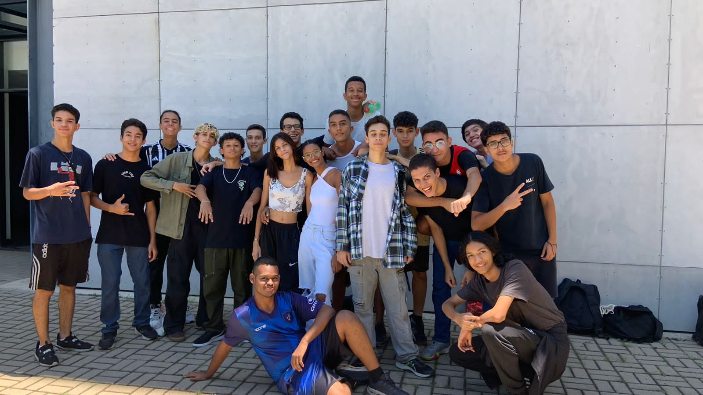

Olá caro leitor, espero que esteja tendo um ótimo dia. Me chamo Bruno ferreira da Silva, atualmente tenho 18 anos e estou cursando o 2º de informática no CEFET-MG. Gosto de praticar esportes, principalmente vôlei e futebol, ler mangás e jogar diversos jogos online. Gosto de ficar em casa ao invés de sair pra festas ou eventos. Minhas qualidades são esforço, persistência, curiosidade e minha observação. Meus defeitos são principalmente a preguiça e um pouco de falta de disciplina que são compensados pelas minhas qualidades.
A escolha dos elementos deste site como o fundo, a musica e os moldais foram feitos de forma que me representassem, sendo as coisas que gosto. A música por exemplo é bem calminha, sendo uma das que mais uso para relaxar. Bom, espero que tenha uma boa experiência analisando o site.
O motivo de me candidatar para o projeto é principalmente aprender python e o dinheiro do projeto, que me ajudaria bastante com as despesas que tenho. Minhas expectativas são expandir meu conhecimento, aprender python e aprimorar meu trabalho em equipe com as pessoas envolvidas no projeto.
Essa é uma foto de 2018 que ficou com uma qualidade bastante ruim, mas sou eu montado em um cavalo na fazenda da minha família. Pode se dizer que é uma foto tirada do fundo do baú, pois nem lembrava da existência dela. Ao rever essa foto me lembrei do que havia ocorrido nesse dia, cheguei até a cair do cavalo foi bem engraçado.
Já essa foto representa a melhor viagem que tive de férias. Além de ter sido a primeira viagem de avião foi uma experiência única. Eu e minha família fomos à Aracaju em Sergipe, curtimos a praia, degustamos a culinária local e andamos de stand up que é uma espécie de canoagem em cima de uma pracha com um remo.
Essa foto é a que geralmente uso de perfil nas redes sociais, considero uma das melhores que tenho atualmente. Foi tirada no Parque Municipal ano passado, estava eu e alguns amigos comendo no Burguer King e pegamos essas coroas do Lucas Neto. Logo após andamos nos brinquedos do parque.
Enfim, obrigado por ter chegado até aqui, espero que tenha tido uma experiência agradável, peço desculpa por alguns bugs que estão a ocorrer na página, não consegui os consertar de maneira eficiente. Queria agradecer também a todos que tem estado ao meu lado durante esses anos de CEFET e aos meus professores que me enriqueceram de conhecimento. Espero que 2024 seja um ótimo ano para mim e a todos ao meu redor :).
